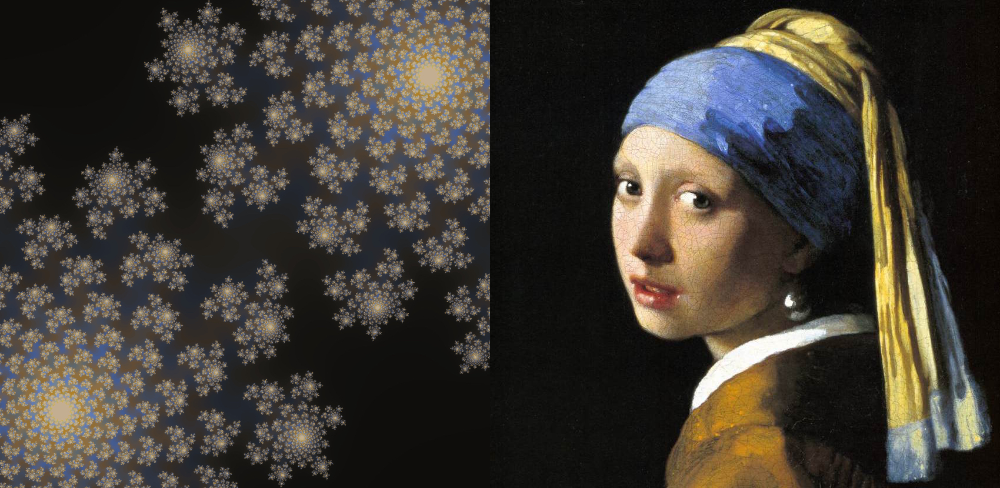

Images
A Julia Julia set: ColorSchemes and Images
Here's an example of how you can use ColorSchemes when creating images with Images.jl. The code creates a Julia set and uses a pre-defined ColorScheme extracted from Vermeer's painting "Girl with a Pearl Earring" (shown at the right for reference).

using ColorSchemes, Images, FileIO
# and possibly QuartzImageIO (macOS) and/or ImageMagick (Linux)
function julia(z, c, maxiter::Int64)
for n = 1:maxiter
if abs(z) > 2
return n
end
z = z^2 + c
end
return maxiter
end
# convert a value between oldmin/oldmax to equivalent value between newmin/newmax
remap(value, oldmin, oldmax, newmin, newmax) = ((value - oldmin) / (oldmax - oldmin)) * (newmax - newmin) + newmin
function draw(c, imsize;
xmin = -1, ymin = -1, xmax = 1, ymax = 1,
filename = "/tmp/julia-set.png")
imOutput = zeros(RGB{Float32}, imsize, imsize)
maxiterations = 200
for col = range(xmin, stop=xmax, length=imsize)
for row = range(ymin, stop=ymax, length=imsize)
pixelcolor = julia(complex(row, col), c, maxiterations) / 256
xpos = convert(Int, round(remap(col, xmin, xmax, 1, imsize)))
ypos = convert(Int, round(remap(row, ymin, ymax, 1, imsize)))
imOutput[xpos, ypos] = get(ColorSchemes.vermeer, pixelcolor)
end
end
save(filename, imOutput)
end
draw(-0.4 + 0.6im, 1200)